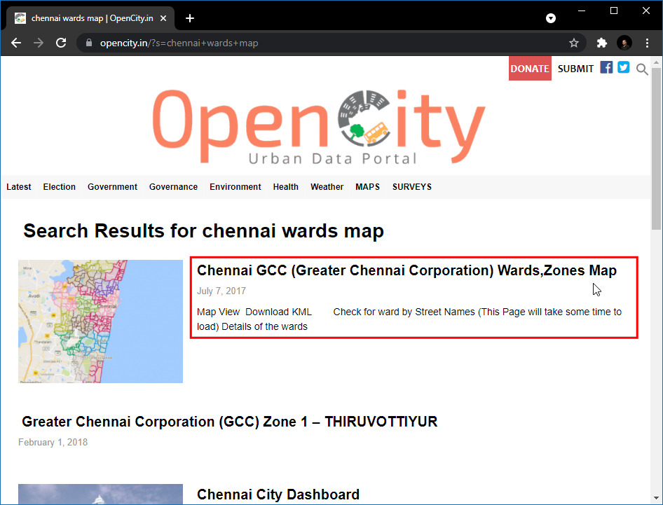

Realizzare unioni spaziali (Spatial Joins) (QGIS3)¶
L’unione spaziale è un classico problema in ambito GIS - si tratta di trasferire attributi da un layer ad un altro basandosi sulle loro reciproche relazioni spaziali. In QGIS questa funzionalità può essere avviata attraverso lo strumento Unisci attributi per posizione .
Descrizione del compito¶
Useremo due layer - Uno shapefile dei confini amministrativi dei quartieri di New York e un altro shapefile che contiene gli indirizzi delle case di cura a New York. Useremo la tecnica di unione spaziale (join) per accertare la capacità totale delle case di cura in ciascuno dei quartieri di New York.
Altri aspetti che avremo modo di apprendere nel corso dell’esercizio¶
Creare filtri per escludere temporaneamente alcuni elementi dal calcolo
Ottenere i dati necessari.¶
NYC Open Data Portal è una fonte straordinaria di open data che riguardano la città di New York.
Scaricate il file .zip dei confini amministrativi dei quartieri di New York Borough Boundaries usando l’opzione Export sul portale.

Scaricare il file .zip Street Pavement Rating usando l’opzione export del portale.
Per comodità, potete scaricare direttamente una copia del dataset dal seguente link:
Fonte Dati [CITYOFNY]
Procedimento¶
Individuate il file appena scaricato
nybb_19a.zipusando il browser di QGIS e trascinatelo nel progetto. Questo è un livello con poligoni che rappresentano confini in New York

Trovate il file
V_SSS_SEGMENTRATING_1.ziped estrate il contenuto dello ZIP. Selezionate e aggiungete il livellodot_V_SSS_SEGMENTRATING_1_20190129.shp. Sono le strade di NY.

Per esaminare gli attributi del livello
dot_V_SSS_SEGMENTRATING_1_20190129fate click con il tasto destro sul layer e selezionate Apri Tabella degli Attributi.

Noterete la colonna
Rating_Bcon valori tra 0-10 ovvero un indice di qualità della pavimentazione. La colonnaRatingWordha un indice categorico. Possiamo utilizzare la colonnaRating_Bper calcolare una media di qualità della pavimentazione.

Alcuni elementi hanno un indice valorizzato come
NR. Questi segmenti non sono stati valutati. Includerli nell’analisi non sarebbe corretto, dunque prima di eseguire l’unione spaziale usiamo un filtro Filter per escluderli. Tasto destro sul livellodot_V_SSS_SEGMENTRATING_1_20190129e selezionare Filter.

Nella sezione Query Builder, inserire la seguente espressione per selezionare tutti gli elementi senza il valore
NR. E” possibile creare la funzione in modo interattivo selezionando Field, Operator e selezionando i valori appropriati in Value. Clicca OK.
"RatingWord" != 'NR'
Vedrete il livello
dot_V_SSS_SEGMENTRATING_1_20190129ha ora un’icona a forma di imbuto che indica che c’è un filtro attivo su questo livello. Ora possiamo eseguire un’unione (join) spaziale su questo livello. Vai sul pannello .

Cerca e trova la voce . Doppio click per lanciare il modulo.

Nella finestra Join attribute by location (summary) , seleziona
nybbcome Input layer. Il livellodot_V_SSS_SEGMENTRATING_1_20190129sarò il Join layer. Potete lasciare il criterio di unione spaziale Geometry predicate impostato a quello predefinito (interseca)Intersects. Clicca il pulsante … vicino a Fields to sumarize.

Nota
Una nota per definire bene i livelli di input e di unione (join): Il livello «input» è quello al quale vengono aggiunte le colonne del livello «unione» . Noi vogliamo aggiungere ai poligoni con i confini amministrativi, la media degli indici di qualità della pavimentazione stradale. Dunque il livello di input sarà quello dei confini amministrativi.
Seleziona
Rating_Be OK.

Clicca il pulsante … vicino a Summaries to calculate.

Seleziona
mean(media) come operatore di aggregazione e clicca OK. Ora possiamo lanciare il processo. Clicca Run.

Verifica che il processo sia terminato senza problemi e clicca Close.

Nella finestra di QGIS vedrete un livello
Joined layeraggiunto. Aprite la tabella attributi del livello. Vedrete una nuova colonna chiamataRating_B_meanche contiene il valore medio degli indici di qualità della pavimentazione delle strate dentro ogni area.

Ora facciamo un’operazione inversa. A volte si vuole aggiungere un attributo ad un livello prendendolo da un’altro livello. Usiamo il modulo
Join attribute by locationper questa analisi. L’obiettivo è quello di aggiungere, ad ogni segmento di strada, il nome dell’area amministrativa dove ricade. Prima di lanciare il procedimento, togliamo il filtro dal livellodot_V_SSS_SEGMENTRATING_1_20190129. Cliccare l’icona con il filtro e selezionare Clear nella ifnestra del Query Builder. Cliccare OK.

Nascondi il livello
Joined layernel pannello Layers. Trova il modulo nel pannello Strumenti di processing e fai doppio click.

Seleziona
dot_V_SSS_SEGMENTRATING_1_20190129come Input layer enybbcome Join layer. Lasciare pure il Geometry predicate al valore di defaultIntersects. Clicca il pulsante … vicino a Fields to add e seleziona la colonnaBoroName. Click OK.

Siccome un segmento stradale può «scavalcare» un confine amministrativo, i.e. non trovarsi completamente dentro un unico confine amministrativo, selezioniamo l’opzione Join type come
Crate separate feature for each located feature (one-to-many). Cliccare Run.

Una volta finito il process, aprite la tabella attributi del livello appena aggiunto
Joined layer. Vedrete una nuova colonnaBoroName.

If you want to give feedback or share your experience with this tutorial, please comment below. (requires GitHub account)